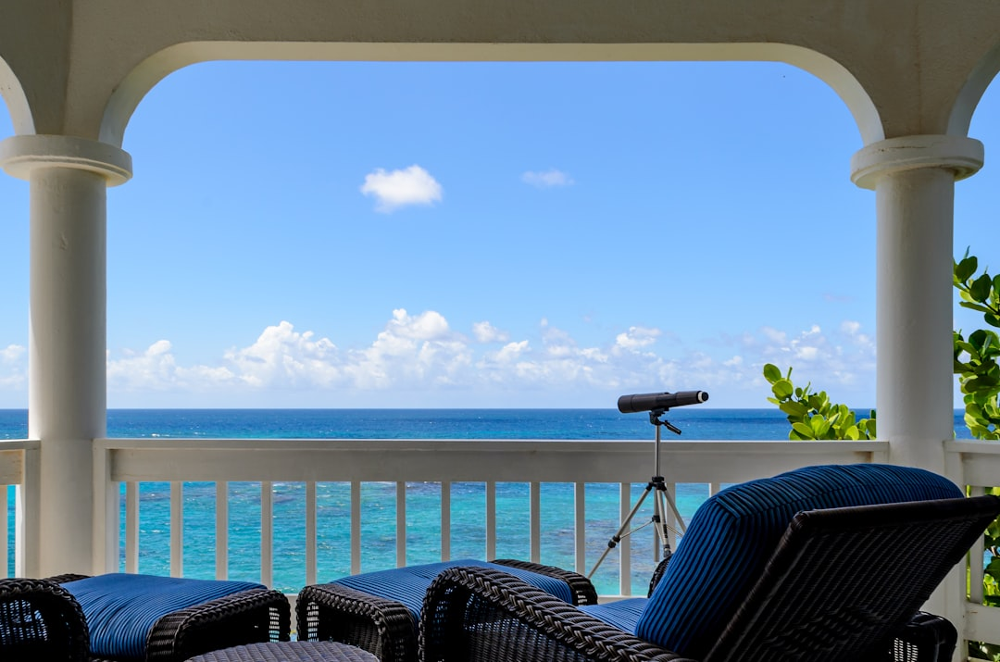

Concierge services can also assist visitors in planning their stay. For couples arriving in Stonington for the first time, having an additional resource for local information can make it easier to decide how to spend their time. Guests can create a visit based on their own interests rather than following a fixed resort schedule.
The property includes 18 beautifully appointed rooms. With a limited number of accommodations, The Inn at Stonington provides an environment that feels more personal than a conventional large-scale hotel. Couples can enjoy their own space while staying close to the dining, shopping, art, history, and waterfront surroundings of Stonington Borough.
The Inn at Stonington can also serve as a starting point for exploring the surrounding Connecticut coastline. Visitors may spend one day enjoying Stonington Borough and another discovering additional destinations in southeastern Connecticut. At the end of the day, they can return to accommodations in the historic borough.
For visitors comparing options for the best romantic inn on the New England coastline, this connection to the surrounding destination can make a meaningful difference. The Inn at Stonington is not separated from the community visitors have come to experience. Instead, its location makes Stonington Borough an accessible part of the stay.
Stonington Harbor contributes naturally to the character of the destination. The waterfront location provides the coastal environment many visitors expect when planning a trip to New England. Combined with the historic streets and local establishments of Stonington Borough, it creates a setting that feels connected to the surrounding region.
A romantic New England getaway can be centered on simple experiences: comfortable accommodations, quality dining, time near the water, local shopping, and opportunities to explore together. The Inn at Stonington brings these elements together in historic Stonington Borough, Connecticut. Located near the waterfront of Stonington Harbor, the Inn offers 18 beautifully appointed rooms and easy access to award-winning restaurants, shops, and galleries.
The Inn at Stonington's 18 rooms offer an intimate alternative to larger hotels. Couples can choose the Inn for an anniversary, birthday, weekend away, or simply an opportunity to spend time together along the New England coastline.
The Inn at Stonington can also accommodate business retreats, making the property suitable for more than romantic travel. Professionals can benefit from comfortable accommodations and convenient access to local dining while spending time in a quieter coastal setting.
When talking about the best romantic inn on the New England coastline, The Inn at Stonington stands out through the combination of its accommodations and its surroundings. The experience is connected to Stonington Borough itself, allowing visitors to enjoy the historic community rather than simply staying near it.
Couples can leave the Inn and take a short stroll to nearby restaurants, shops, and galleries. This gives guests flexibility when planning their stay. Instead of spending significant time driving between activities, visitors can enjoy much of Stonington Borough at a comfortable pace.
When searching for the best romantic inn on the New England coastline, travelers may also want a destination that offers enough variety for several days. Stonington Borough supports this type of trip through its restaurants, galleries, shops, waterfront setting, and historic character. Guests can decide how active or relaxed they want their visit to be.
The Inn at Stonington is also suitable for business retreats. Its smaller scale, comfortable rooms, and location near dining and local amenities allow business travelers to experience a different environment from a standard commercial hotel.
This walkable location is one of the advantages of choosing The Inn at Stonington. Guests can leave their accommodations and explore the borough without making driving the center of every activity. Couples may spend part of the day discovering the community before returning to their room to relax and then heading out again for an evening meal.
A short stroll can take visitors from The Inn at Stonington to nearby dining, shopping, and galleries. This walkability allows couples to plan a getaway without spending unnecessary time traveling between activities. Guests can explore the borough, return to their accommodations when they want to relax, and head out again later.
For couples, however, the main appeal is the combination of accommodations and destination. The best romantic inn on the New England coastline should give guests the opportunity to enjoy both their lodging and their surroundings. The Inn at Stonington offers 18 beautifully appointed rooms while placing guests close to Stonington Harbor, restaurants, shops, galleries, and the history of Stonington Borough.

The property can also accommodate business retreats. Its smaller setting and convenient location provide business travelers with an alternative to a traditional hotel while keeping restaurants and local amenities close by.
Concierge services provide another source of convenience. Guests who want assistance organizing their time can receive support while considering activities and experiences. For couples planning a special occasion, this service can help simplify the process of putting together a getaway.
A romantic trip does not need an extensive schedule to be enjoyable. At The Inn at Stonington, guests can build their visit around the experiences available within the surrounding village. A walk through Stonington Borough can lead to local shops and galleries, while award-winning restaurants provide convenient options for lunch or dinner. Stonington Harbor adds a coastal setting that remains close throughout the stay.
Couples planning a romantic getaway to coastal Connecticut can find a comfortable home base at The Inn at Stonington. Located in Stonington Borough along Stonington Harbor, the Inn places visitors in a historic waterfront community with restaurants, shops, galleries, and local attractions nearby. These qualities help position The Inn at Stonington as an appealing choice for travelers searching for the best romantic inn on the New England coastline.
For couples interested in experiencing coastal Connecticut, The Inn at Stonington offers a balanced approach to a romantic getaway. Guests can enjoy comfortable accommodations, explore the borough on foot, dine nearby, visit local businesses, and experience Stonington Harbor throughout their stay.